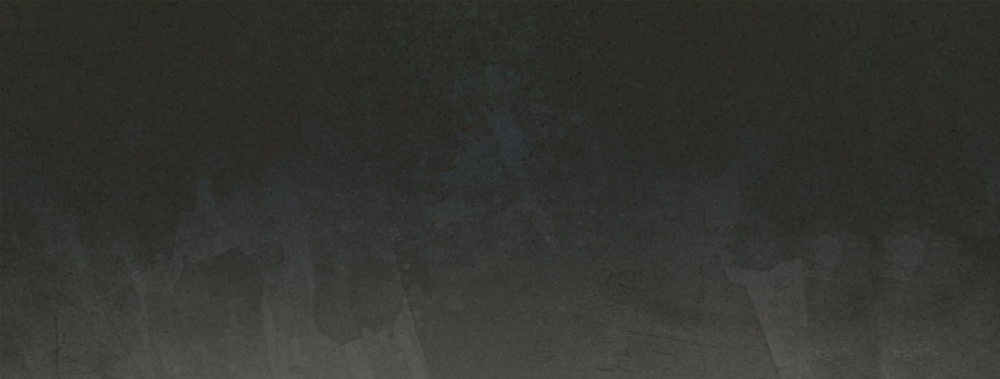

WELCOME TO MY
PORTFOLIO
integrity · passion · art
My homepage for the final will most likely look a bit differnt than this - wanted to play around with CSS on this page as well as do the assignemt. The gray and logo are overlap images on the background.
- The logo will also be placed on White (I like a more clean look -so ill be using more white and some texture).
- But for the sake of UNIT 3 its up there for now
this will also have a differnt backround that is - not a hero page -- im thinking more along the lines of a long strip or something framed.
- I have some quetions about text placement and a handle of other things.THANKS So Much !!